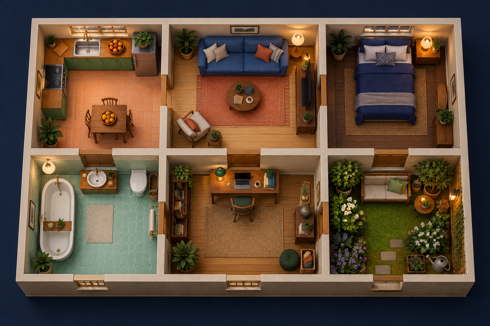

Save a learned brain. Disconnect its weights. See how its choices change.
Pip has a house and five changing needs. It chooses between eating, resting, washing, working, playing and spending time outside.
This version uses a small artificial model with 36 trainable input-to-action weights and temporal-difference learning. Its dopamine signal is a numerical teaching signal, not a biological chemical simulation. The graph shows those actual model weights.
House activities and need effects are authored. No MaleCNS or FlyWire neurons are loaded. The fly has no modeled consciousness, and these experiments do not establish how a living fly would behave.
Your world automatically saves on this browser. It pauses while the tab is hidden. Checkpoints preserve learned weights; they don’t rewind the day.
This clears this browser’s world, learned weights, journal and brain checkpoint. You cannot undo it.